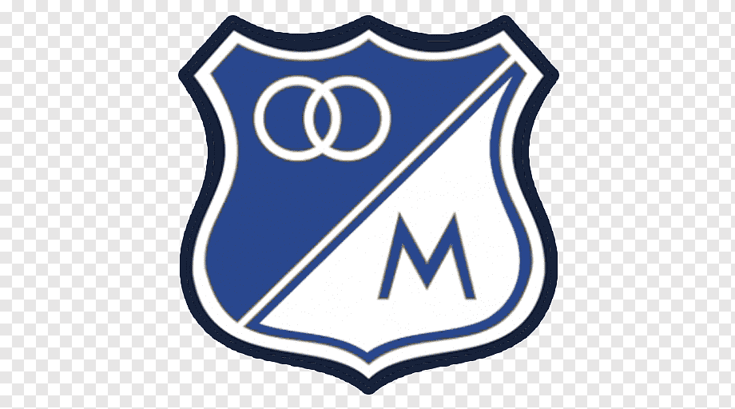

Millonarios FCMillonarios Fútbol Club S. A., conocido coloquialmente como Millonarios, es un club de fútbol colombiano con sede en Bogotá, la capital del país. Es uno de los clubes más emblemáticos y laureados de Colombia, reconocido como una de las entidades deportivas más importantes del país y de Sudamérica. Actualmente milita en la Primera División de Colombia, siendo el club con más puntos en su clasificación histórica y habiendo disputado todas sus ediciones desde 1948.